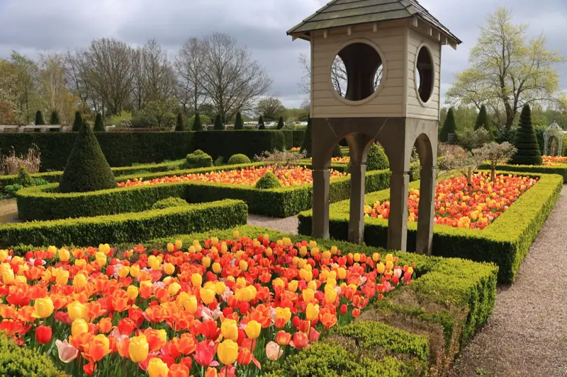
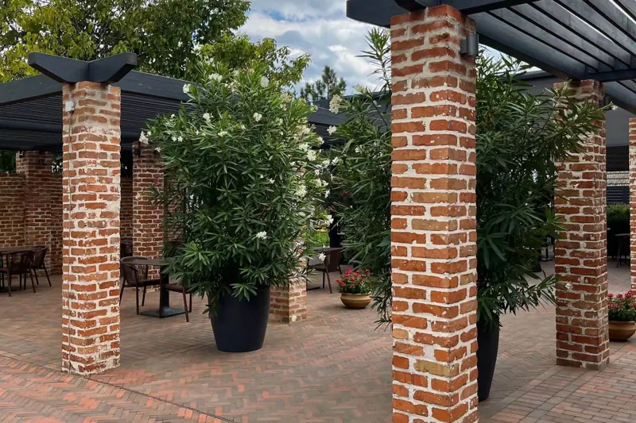
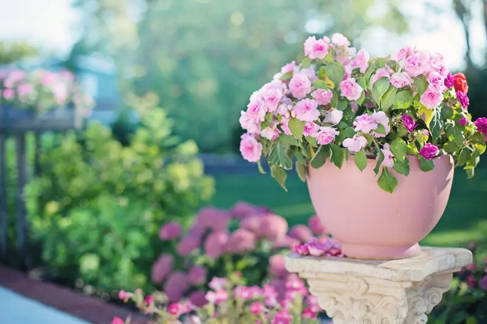
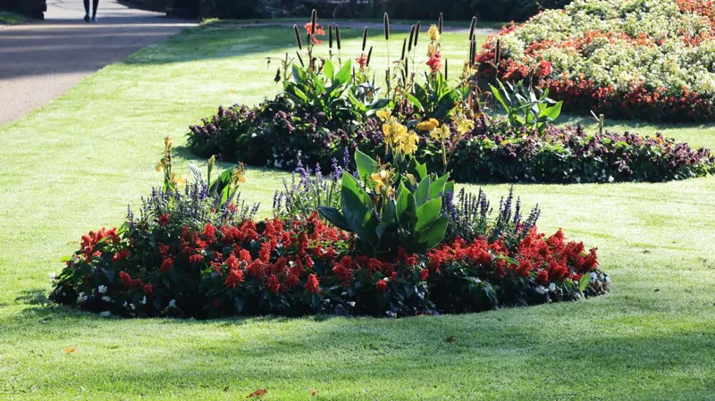
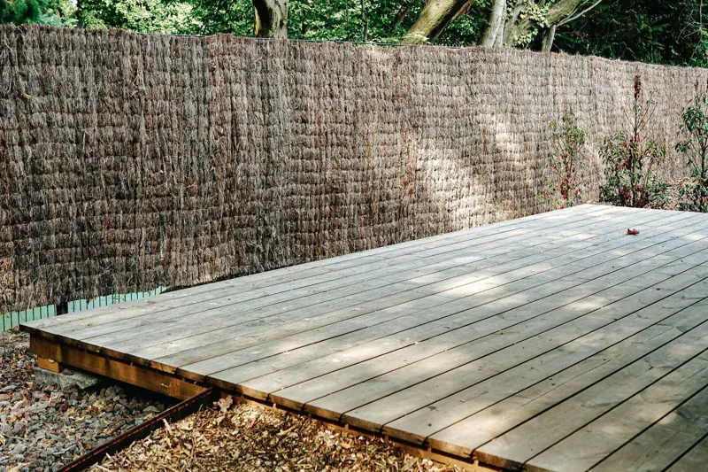
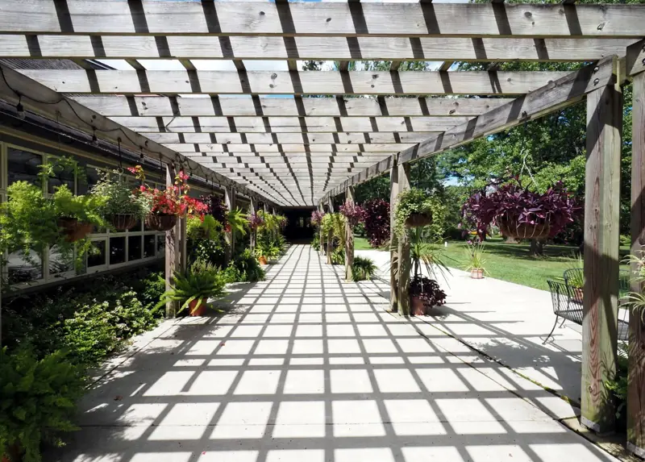
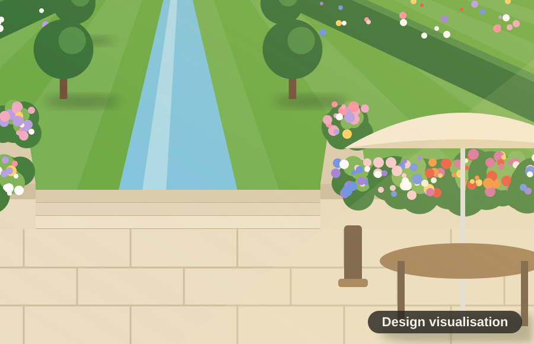

Stock photoGarden design
A measured survey, a layout plan and a visualisation, so you can see the finished garden before any digging starts.
Services
One team from first sketch to final planting. Choose a single job or a complete garden transformation.

Stock photoA measured survey, a layout plan and a visualisation, so you can see the finished garden before any digging starts.

Stock photoPatios, decks, paths, steps and walls, laid on a proper base so they stay level for years.

Stock photoBorders and pots chosen for your soil, your light and how much time you want to spend looking after them.

Stock photoNew turf, levelling, safe play surfaces and clean edges that make the whole garden look finished.

Stock photoBamboo, reed and slatted screens, fence panels, trellis and gates for privacy that looks good.

Stock photoPergolas and arches, plus pruning, hedge cutting and tidy-ups through the year to keep it all looking its best.
Every project

It depends on size, materials and access. After the free visit we send one written price. [Add typical price ranges here if the business wants them shown.]
A small garden can take a week or two. A family garden is usually a few weeks, and a large garden longer. You get a start date and a timeline with the quote.
Only for the first visit and the handover. We just need side or garage access while we work.
Tell us a little about your space. Sam will come round, listen, and send a clear written quote. No cost, no pressure.